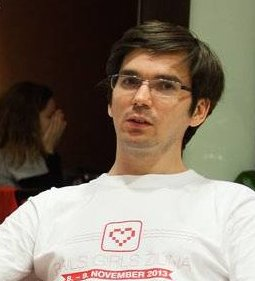

Curriculum Vitae

{kind=link}
Marek Laboš
| Born | April 9th 1983, Trnava, Slovakia |
|---|---|
| Contact | E-mail: nospam.keram@gmail.com Mobil: +44 747 225 8321 |
| Operating systems |
Windows XP, Vista - advanced user Linux, OSX - advanced user (preferred OS) |
|---|---|
| Coding and Programming |
Ruby (preferred language), Ruby on Rails - advanced, Sinatra, Administrate HTML, CSS - advanced, Javascript - advanced, PHP - intermediate (experience with Zend Framework and Nette framework) Java, Lisp - Clojure, C - basics |
| Database |
MySQL - intermediate, PostgreSQL - basics, CouchDB - intermediate |
| CMS web development experience |
RefineryCMS, Liferay, jNetPublish, Drupal 7, WordPress |
| Security tools |
Familiar - user of multiple programs and tools like: Nmap, BurpSuite, Metasploit, Nikto, Skipfish, SQLmap and others. |
| Web Servers | Apache, Nginx - intermediate |
| Tools or knowledges |
Web Application Security - intermediate, Usability and Accessibility - intermediate, Grunt, Gulp, Google Closure, Padrino RB - familiar, React - experimenting and using in production Experience with third party API. (facebook, twitter, google maps etc.) |
| 01. 2014 - present | Fullstack web developer - at Specle Ltd. in London working primarly with Ruby (on Rails) and Javascript. Working in team from three to six people, maintaining and developing new features in company codebase. |
|---|---|
| 05. 2009 - 12.2013 |
Self employer - work on various web projects as contractor. Programming and web development in ruby, javascript or php language. Web application penetration testing via OWASP testing guide, SEO and UX consulting. |
| 04. 2010 - 11. 2010 | Information Systems Programmer and Administrator on National Technical Museum in Prague. |
| 06. 2009 - 11. 2009 | PHP programmer on company Jyxo s.r.o.. Programming support for 1188.cz, development of administration for Voice Operators, etc. |
| 2006 - 4. 2009 |
Web developer (frontend developer) on company Et Netera a. s.. Works on web projects for clients Annonce, Datart, Euromedia, Ahold, Telefónica O2 ... |
| ... - 2006 | various brigade work (drawing on AutoCad, etc.) |
| 2009 - 2010 | Czech Technical University in Prague Faculty of Nuclear Sciences and Physical Engineering |
|---|---|
| 2001 - 4. 2006 | Slovak University of Technology in Bratislava, Slovakia Faculty of Civil Engineering |
| 1997 - 2001 | Secondary School of Civil Engineering in Nitra |
| November 2015 | React conference Bratislava |
|---|---|
| March 2015 | Bath Ruby Conference |
| August 2015 | Chaos Communication Camp |
| October 2014 | All Your Base Conference |
| December 2012 | Workshop by Igor Minar on AngularJS |
| October 2012 | Hacktivity - IT Security Conference in Budapest |
| May 2012 | Confidence - IT Security Conference in Krakow |
| February 2012 | Conference Security Session 2012 in Brno |
| August 2009 | Hacking at Random (HAR) - outdoor hacker conference in Netherlands |
| March 2007 | Training - workshop: User testing and development of usable Web (H1.cz) |
| November 2013 | Mentor at Rails Girls Žilina |
|---|---|
| August 2012 | Mini workshop about development and contributions to Progressbar Hackerspace website. (Slides) |
| April 2012 | Presentation at Rubyslava about Ruby on Rails web CMS RefineryCMS. (Slides) |
| September 2010 | Presentation at BarCamp Žilina about work in the Technical Museum. (Slides in Slovak language) |
|
English - intermediate (2 years living in UK), Czech - passive (7.5 years lived in Czech Republic), Slovak - native language, Deutch - basics |
| Sports | Frisbee - Ultimate - Freestyle - Discgolf, Bike, Chess |
|---|---|
| Technologies & Science |
Security, (functional) programming, mathematics & physics |
| Arts | Photography, Music, Concerts, Web Design and Usability |
| Others |
Code Reviews, Hackathons, Programming and UX meetups Supporting slovak hackerspace Progressbar Supporting czech-slovak Refinery community (Blog) |
| Social networks & links |
meetup, github, twitter, flickr (photos), last.fm (music) |